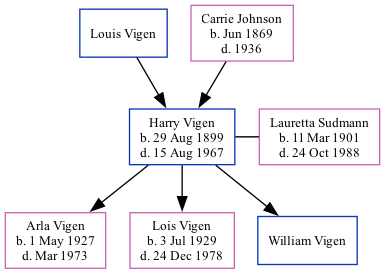

Harry Arthur Vigen 1899 - 1967
[ Home ] | [ Surnames Index ] | [ Family History ]The twin brother of Clarence Dewey and the 2nd of 3 children of Louis Vigen and Carrie Johnson, , Harry was the great-great-uncle of Stephanie Hardesty (née Teten), was born in Sioux City, Woodbury Co., Ia., USA on Aug 29, 18991,2,3,4,5,6 along with his twin brother Clarence Dewey and had 3 children with Lauretta Ann Sudmann: Arla Mae, Lois Ann and William L.
During his life, he was living in Sioux City, Woodbury, Iowa in 19001; in Sioux Ward 3, Woodbury, Iowa in 19102; in Sioux City Precinct 8, Woodbury, Iowa in 19203; in Sioux City in 19304 and in 19355; in Sioux City, Iowa, USA in 19367; in Sioux City, Woodbury, Iowa on Apr 1, 19405; and in Sioux City6.
He died on Aug 15, 1967 in Sioux City.
Parents
- Louis Dewey
- Carrie was born in Jun 1869
Children
- Arla Mae was born on May 1, 1927
- Lois Ann was born on Jul 3, 1929
- William L
Citations
- 1900 United States Federal Census Ancestry.com Operations Inc (Age: 9/12; Marital Status: Single; Relation to Head of House: Son)
- 1910 United States Federal Census Ancestry.com Operations Inc (Age in 1910: 10; Marital Status: Single; Relation to Head of House: Son)
- 1920 United States Federal Census Ancestry.com Operations Inc (Age: 20; Marital Status: Single; Relation to Head of House: Son)
- 1930 United States Federal Census Ancestry.com Operations Inc (Age: 30; Marital Status: Married; Relation to Head of House: Head)
- 1940 United States Federal Census Ancestry.com Operations, Inc. (Age: 40; Marital Status: Married; Relation to Head of House: Head)
- U.S., World War I Draft Registration Cards, 1917-1918 Ancestry.com Operations Inc
- U.S. City Directories, 1821-1989 (Beta) Ancestry.com Operations, Inc.
Family Tree
Data (GEDCOM) maintained by Jay Weston Hannah, Omaha, Nebraska, USA.
Website generated by ged2site. Last updated on Jun 18, 2024.